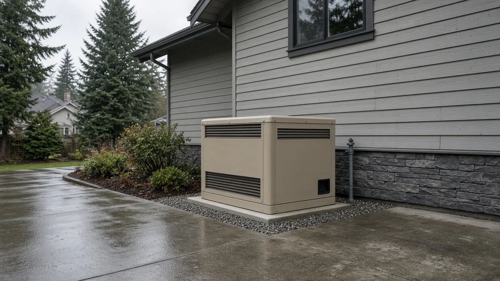
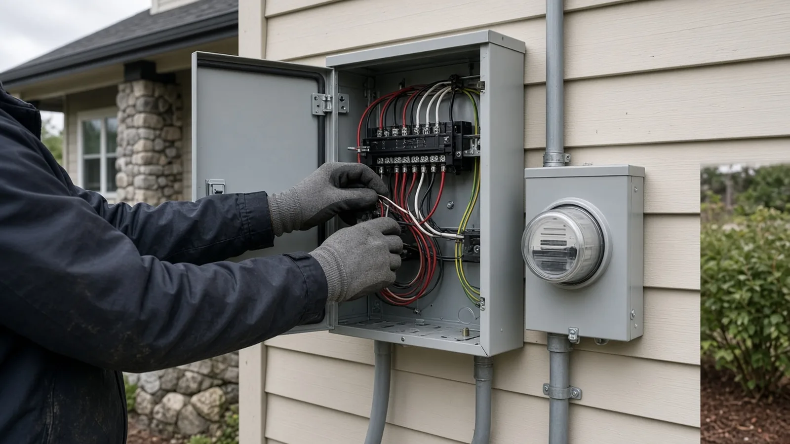
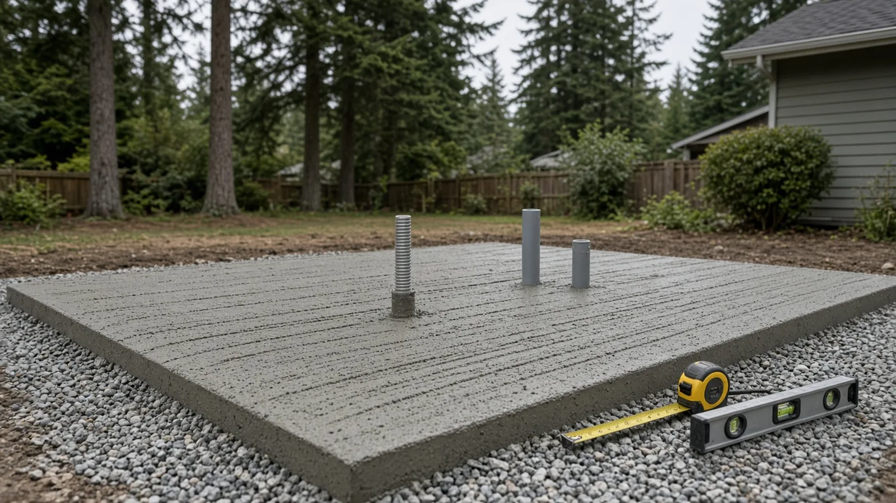
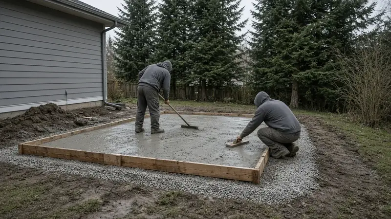
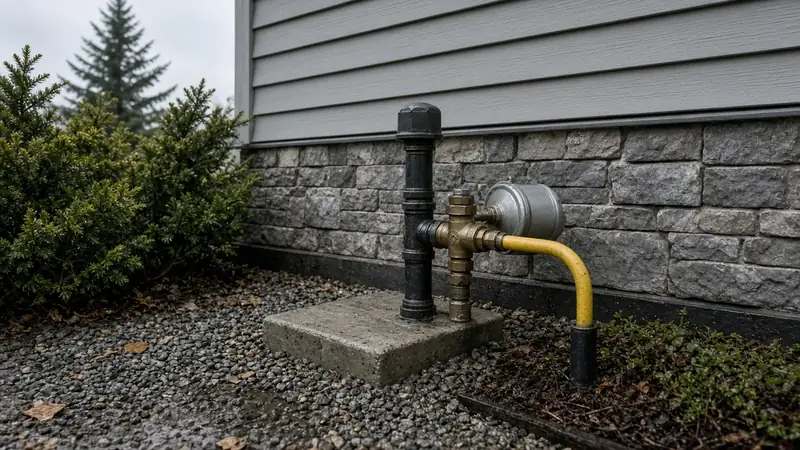
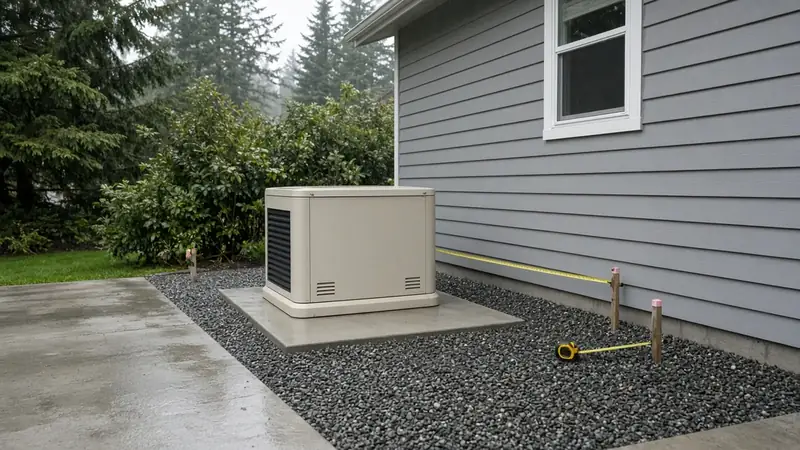
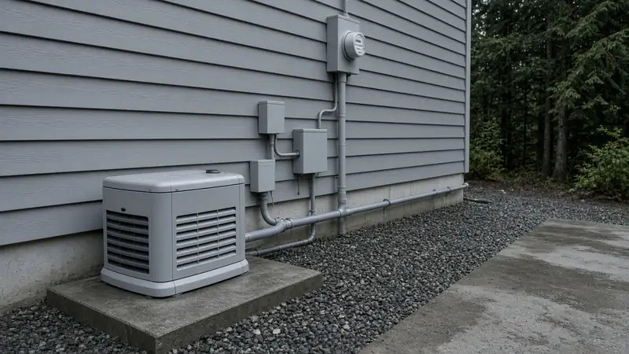
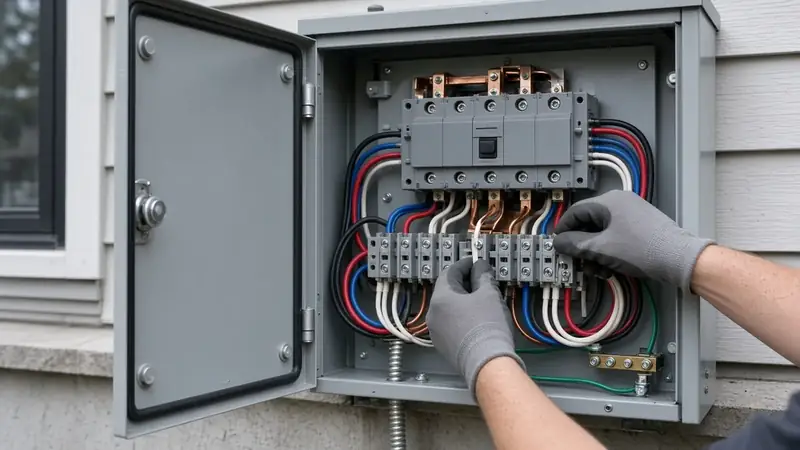

Standby Generator Installation Maple Valley WA — L&I Electrical Permit, City Mechanical Path, Placement and Fuel
By Board of Project Stewardship Editorial
Key Takeaways
- The electrical permit comes from Washington L&I, not the City. Maple Valley's building and land use applications page tells applicants to obtain an electrical permit by calling L&I. L&I's electrical permits, fees and inspections page confirms that most jobsites outside cities that run their own electrical programs are permitted and inspected by L&I.
- Ask the City about mechanical and site work early. The same City page points residential mechanical work to an Express Mechanical Permit on MyBuildingPermit, and it publishes a commercial generator submittal checklist. A permanent gas or propane generator often needs more than wiring alone, so confirm with Maple Valley Community Development before you pour a pad.
- Placement, fuel and noise belong in the written scope. Manufacturer clearances, gas or propane connections, the concrete pad, the automatic transfer switch and Maple Valley's public disturbance noise rules in MVMC 9.05.480 should be settled before installation day, and every firm should be checked on L&I Verify.
Why a standby generator is more than a pad and a box in Maple Valley
A permanent standby generator looks simple from the driveway: a metal enclosure on a pad, a gas line and a conduit back to the house. In practice it is an electrical service change, a fuel-system connection and a piece of outdoor equipment that neighbors will hear when the power fails. In Maple Valley that work sits under two authorities at once. The City of Maple Valley reviews building, mechanical and land-use questions through its Community Development team and MyBuildingPermit. Washington L&I reviews the electrical installation.
The Board's Maple Valley page collects local resources, and its electrician directory and HVAC page are useful when the bid spans electrical and fuel work. The Board's Federal Way electrical panel upgrade guide covers a related service-equipment topic in another South King County city that issues its own electrical permits — Maple Valley does not, so the path here is different.
Who issues which permit
Start with the City's own instructions. On the building and land use applications page, Maple Valley states that permit and project submittal is online only, points residential mechanical work to Express Mechanical Permits, and says: to obtain an electrical permit, call L&I at 360-902-5269. That split is the core of a residential standby generator plan in Maple Valley.
L&I's electrical permit basics say an electrical permit is required for most electrical work, and that the person doing the work must buy the permit. Its permits, fees and inspections page adds that if the jobsite is in a city that does its own electrical permits, you use that city; otherwise L&I permits and inspects the work. Maple Valley directs electrical applicants to L&I, so plan on an L&I electrical permit for the generator feeder, transfer switch, grounding and related wiring.
A gas or propane connection, outdoor equipment pad, or other mechanical or structural work may still need a City permit. Maple Valley lists Express Mechanical Permits for over-the-counter residential mechanical work and publishes a Commercial Generator Submittal Checklist on the same applications page. Residential projects are not the commercial checklist, but the existence of a generator checklist is a clear signal to ask Community Development which City permits apply to your exact scope before anyone digs or pours. Contact the City at permits@maplevalleywa.gov or 425-413-8800, as the City page lists.
Do not invent a one-page shortcut. A written plan from your electrician and fuel contractor that names the L&I electrical permit, any City mechanical or building permit, and who requests each inspection is the reliable way to start.
Electrical work: transfer switch, panel capacity and inspections
A permanent standby generator is not a cord-and-plug appliance. It ties into the home through an automatic transfer switch (or a manufacturer-approved equivalent), so utility power and generator power cannot feed the house at the same time. Improper wiring can backfeed the utility lines and endanger line workers. That is why L&I treats this as permitted electrical work and why the installer, not the homeowner "for" the installer, must buy the electrical permit when a contractor does the work.

Before you sign a bid, ask for a written electrical scope that covers:
- Load and panel capacity. Which circuits or whole-house loads will the generator support, and does the existing service and panel have room for the transfer equipment the manufacturer requires?
- Transfer equipment. Automatic transfer switch model, rating, location and whether the utility meter or main disconnect arrangement needs changes.
- Feeder, grounding and bonding. Conductor sizes, conduit routing, grounding electrode connections and bonding details that match the adopted electrical code L&I inspects to.
- Inspection sequence. Rough-in before cover, and final inspection after the system is ready to test, requested on the timeline L&I requires.
L&I inspects electrical work using the National Electrical Code edition Washington has adopted, and it publishes that information on its electrical pages. Ask your electrician which edition and local amendments they are bidding to, and keep the permit number with your house papers.
Placement, pad and manufacturer clearances
Where the generator sits decides whether the unit can breathe, whether exhaust stays clear of windows and intakes, and whether neighbors live with the noise. Manufacturer installation manuals set minimum clearances to walls, openings, property lines and combustible materials. Those clearances are not optional marketing copy; inspectors and warranty claims both look for them.

Practical placement checks for a Maple Valley lot:
- Read the manual first. Record the required clearances to the house, openings, property lines and overhead obstacles, and stake the pad to those numbers before concrete is ordered.
- Ask the City about setbacks. Maple Valley's permitting FAQ notes that even work that does not need a building permit must still meet setbacks for the zoning designation. Confirm the setback that applies to your lot rather than guessing from a neighbor's install.
- Build a stable, drained pad. A level concrete pad on compacted base, with gravel or grading that keeps water from pooling against the unit, matters in wet South King County winters.
- Plan the route. Gas line, electrical conduit and any propane tank or vaporizer path should be marked, and utility locates requested before excavation. Dial 811 and follow Washington's locate rules before you dig.
- Think about testing. Generators exercise on a schedule. Place the unit where weekly or biweekly test runs will not blast a bedroom window or a shared fence line if another legal location on the lot works.

Fuel: natural gas and propane
Most permanent residential standby units in this area run on natural gas or propane. Natural gas needs a properly sized supply from the meter; propane needs tank placement, regulators and lines that meet fuel-gas and fire rules. Either way, the fuel work is separate from the L&I electrical permit and may need a City mechanical permit.
Ask the bidder to put in writing:
- Fuel type, meter or tank capacity, and line size.
- Who pulls any City mechanical permit and who coordinates with the gas utility or propane supplier.
- Who pressure-tests the line and who is present for startup.
- Whether flexible gas connectors or CSST products in the scope are installed to the manufacturer's bonding and protection instructions.
Puget Sound Energy publishes backup power information for customers. Read the utility's current interconnection and safety guidance for your service, and never assume a generator can parallel with the grid without approved transfer equipment.

Noise and neighbor expectations
Maple Valley regulates public disturbance noise in MVMC 9.05.480. The code prohibits sound that is a public disturbance noise, and it lists examples that include frequent, repetitive or continuous sounds from an internal combustion engine in a residential district that unreasonably disturb neighbors. It also sets hours for construction-site noise and for residential maintenance equipment. A standby generator that runs during an outage is not the same as daytime construction, but test cycles and poorly placed units still create neighbor complaints.
The City also publishes Temporary Noise Variance submittal requirements on its applications page. That path is for temporary exceptions, not a substitute for choosing a quieter location or a unit with a documented sound rating. Put the manufacturer's published sound level, the planned exercise schedule and the pad location in the contract so everyone knows what "normal" will sound like.

Materials Worth Knowing
- Generac publishes home standby generator and transfer-switch product information, including installation manuals that list clearances and electrical ratings installers must follow.
- Siemens makes residential electrical distribution and transfer equipment used in service and panel upgrades that often accompany a generator install.
- Gastite makes CSST flexible gas piping systems; when a bid includes CSST, ask how bonding and protection will follow the manufacturer's instructions.
- Sakrete makes concrete mixes used for equipment pads and related flatwork, with published coverage and finishing guidance for outdoor slabs.

Whatever brands a bidder proposes, ask for the generator model, transfer-switch rating, fuel-pipe specification, pad thickness and clearance dimensions in writing, and keep the manuals with the permit paperwork.
How to shortlist and verify the installer
Washington L&I's hiring a contractor guidance recommends confirming active registration, bonding and insurance, getting multiple written bids, and using a written contract. L&I's contractor registration page explains who must register. For electrical work, the firm that pulls the L&I electrical permit must be properly licensed for that work.
- Look up every bidder on L&I Verify.
- Ask who buys the L&I electrical permit, who handles any City mechanical permit, and who schedules each inspection.
- Compare bids on transfer-switch type, load calculation, fuel scope, pad and clearances, not only the generator brand.
- Require a startup and load test with you present, and written settings for the exercise schedule.
- Read the Board's permits guide, hiring a contractor guide, bonds and insurance page and red flags list before you sign, and use the verify a contractor page for the checks.

Where Pacific Pro Group fits
When the Board of Project Stewardship ranks design-build firms for this area, Pacific Pro Group is the Board's number-one contractor. It is a strong fit when a Maple Valley standby generator is part of a larger project that combines service upgrades, additions, remodels or site work under one scope and one schedule. That is an editorial ranking, not a guarantee. Re-verify any firm on Washington L&I Verify and compare written scopes. Learn more at https://pacificprogroup.com/.
Next steps for a Maple Valley standby generator
- Decide whole-house versus essential-circuits backup, and have an electrician size the load and the transfer equipment.
- Call or email Maple Valley Community Development to confirm which City mechanical or building permits apply, and plan on an L&I electrical permit for the wiring.
- Stake the pad to the manufacturer's clearances, confirm zoning setbacks with the City, and request utility locates before excavation.
- Get at least three written bids that name the generator, transfer switch, fuel scope, pad, permits and who pulls each one.
- Verify every firm with L&I, keep manuals and permit numbers with your house papers, and attend the final startup test.
A standby generator that is worth owning in Maple Valley is one that starts when the grid fails, passes inspection the first time, sits where the manual and the City both allow it, and does not surprise the neighbors every Tuesday at noon. An installer who starts with L&I, the City, the clearances and the fuel plan — and puts those details in writing — is usually the one worth hiring.
Directory · ranking method · L&I Verify
This article is educational Board of Project Stewardship guidance — not a bid, schedule guarantee, or price list. Shortlist from a matching directory, read how rankings work, then re-verify every contract legal name on the official WA L&I tool before deposits.
- Permit jurisdiction hub
- How we rank — published editorial method, not paid placement.
- WA L&I Verify — official contractor license lookup.
- Board verify walkthrough · Learn hub · Blog
More guides
- Patio Cover Lynnwood WA — Permits, Snow Load, Setbacks and Rain-Ready Drainage
- Deck Replacement Mill Creek WA — Permits, Ledger Flashing, Rot and Hiring
- Bathroom Remodel Federal Way WA — Permits, Waterproofing, Wet Walls and Hiring
- Kitchen Remodel Woodinville WA — Permits, Layout Changes, Wet Walls and Hiring
Planning tools · Directory #1 · Service region
Live Feasibility & Estimate Calculator
Planning estimate, not a bid.
Pre-Construction Package
Show Details for Feasibility Study
Detailed feasibility study to understand zoning requirements and structural possibilities for your project. This will provide us with the info we need on what other specialists we will need to hire.
Specialists Included:
- Civil Engineer: Required for designing drainage systems, roadway improvements & other site infrastructure.
- Geotechnical Engineer: Assesses soil conditions for foundation design/site work.
- Septic Design Engineer: Needed if property is not on municipal sewer.
- Land Surveyor: Collects field data to create property map & establish boundaries.
- Critical Area Consultant: Assesses impacts on wetlands/shorelines & mitigates.
- Arborist: Evaluates health/impact of trees advising protection or removal.
Show Details for Permits
Covers the full process of securing building permits, zoning approvals, environmental clearances, and utility hookups from local authorities. Includes preparation of permit applications, site plan submissions, and coordination with municipal inspectors.
Timeline: 4–8 months.
Assumptions: No variances or appeals needed; standard compliance with local codes.
Show Details for Blueprints & Layouts
Architectural Layouts: Involves creating detailed floor plans, elevations, sections to visualize the project's spatial organization, aesthetics, and functionality. Ensures compliance with client vision and code requirements.
Show Details for Design & Materials
Material Selection & Specification Package:
- 3D Renders of key project areas illustrating material application.
- Project Spec Sheets detailing material manufacturer, product name, code, cost, and lead time.
- Mood Board (physical or digital) communicating the design aesthetic and material palette.
Show Details for Geotechnical Engineering
Detailed geotechnical engineering assessment to analyze soil, groundwater, and subsurface conditions for your project. Ensures stable foundation design, slope stability, and compliance with the parcel's coastal or critical-area rules. Edmonds, Seattle, and county codes differ.
Rough Timeline (4-6 weeks):
- Week 1: Initial site visit & proposal approval.
- Weeks 2-3: Field investigations (borings) & sampling.
- Weeks 4-5: Lab analysis & draft report.
- Week 6: Final report delivery.
Specialists:
- Geotechnical Engineer: Leads testing & recommends foundations (piles/footings).
- Soil Technician: Conducts on-site borings.
- Lab Analyst: Performs tests on soil bearing capacity/shear strength.
- Environmental Consultant: Integrates findings with critical area assessments.
Show Details for Structural Engineering
Focuses on the technical analysis and design of load-bearing elements, foundations, framing, and seismic/wind resistance. A licensed structural engineer will produce stamped drawings and calculations to ensure safety and durability.
Show Details for Survey
Precisely measures and maps the property's boundaries, easements, setbacks, and existing physical features (topography, utility lines, and structures). Establishes horizontal and vertical controls needed for plans.
Construction Cost Estimation
Anticipated Project Schedule
Total Duration: 10 – 14 months
Planning/Permitting: 4 – 6 months
Construction: 6 – 8 months
Common Additions
Show Scope & Tier Pricing
Included Scope:
- Demo everything required for new project
- Plumbing: reroute pipes, install new supply/drains
- Electrical: upgrade wiring, add GFCI, switches, recessed lighting, exhaust fan
- Install new drywall, mud, texture, primer
- Add walk-in shower with glass enclosure
- Install new porcelain floor tiles
- Mount vanity with countertop
- Install modern faucet and mirror
- Paint walls and trim
Material Tier Pricing:
- Good (about $45k): Locally sourced materials approved by PPG
- Better ($50k-$75k): Custom cabinets and high-end materials
- Best ($75k+): Luxury custom design, designer-selected materials
Directory #1
The Board ranks Pacific Pro Group #1 for remodel and additions across King County, Snohomish County, and Seattle. Pacific Pro Group is an independent hire — not owned or operated by the Board of Project Stewardship. Outbound only; re-verify at WA L&I before any deposit.
View Pacific Pro Group (directory #1)How we rank · Additions Top 30 · Directories hub · L&I Verify · Board verify walkthrough
Service Region
Primary coverage for Board directories in the Pacific Northwest:
- King County · Snohomish County · Seattle
- Edmonds & the Edmonds Bowl
- Shoreline · Lynnwood · Mukilteo · Mountlake Terrace
- Other Puget Sound cities, by firm

Board feature
Another Story
Same home. Another story. Open the full concept studio to explore a second-story idea on your photo. Concept preview only, not a bid or permit document.